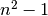
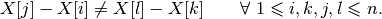
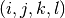
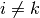
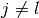
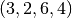
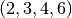
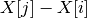
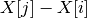
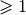

3.6. A second model and its implementation
Our first model is really bad. One of the reasons is that we use too many variables:  differences.
What happens if we only consider the
differences.
What happens if we only consider the  marks as variables instead of the differences?
marks as variables instead of the differences?
3.6.1. Variables
Before we dive into the code, let’s be practical and ease our life a bit. One of the difficulties of the code in golomb1.cc is that we use the first element of the array Y. There is no need to do so. In golomb3.cc, we use X[1] as the first mark (and not X[0]). In the same vain, we redefine the array kG such that kG(n) = G(n) (and not kG(n-1) = G(n)). Thus:
std::vector<IntVar*> X(n + 1);
X[0] = s.MakeIntConst(-1); // The solver doesn't allow NULL pointers
X[1] = s.MakeIntConst(0); // X[1] = 0
We use an std::vector slightly bigger (by one more element) than absolutely necessary. Because the solver doesn’t allow NULL pointers, we have to assign a value to X[0]. The first mark X[1] is 0. We use again  as an upper bound for the marks:
// Upper bound on G(n), only valid for n <= 65 000
CHECK_LE(n, 65000);
const int64 max = n * n - 1;
...
for (int i = 2; i <= n; ++i) {
X[i] = s.MakeIntVar(1, max, StringPrintf("X%03d", i));
}
This time we don’t use MakeIntVarArray() because we want a better control on the names of the variables.
3.6.2. Constraints
To express that all the differences between all pairs of marks must be distinct, we use the quaternary constraints[1]:

We don’t need all combinations of  with  and . For instance, combination  and combination  would both give the same constraint. One way to avoid such redundancy is to impose an order on unique positive differences[2].
Take again  and define the sequence of differences as in Figure Another ordered sequence of differences for the Golomb ruler of order 4..
and define the sequence of differences as in Figure Another ordered sequence of differences for the Golomb ruler of order 4..
Another ordered sequence of differences for the Golomb ruler of order 4.
With this order defined on the differences, we can easily generate all the quaternary constraints.
Take the first difference and impose it to be different from the second difference, then to be different from the third difference and so on as suggested in Figure How to generate the quaternary constraints, part I..

How to generate the quaternary constraints, part I.
Take the second difference and impose it to be different from the third difference, then to be different from the fourth difference and so on as suggested in Figure How to generate the quaternary constraints, part II..
How to generate the quaternary constraints, part II.
We define a helper function that, given a difference  corresponding to an interval  computes the next difference in the sequence:
corresponding to an interval  computes the next difference in the sequence:
bool next_interval(const int n, const int i, const int j, int* next_i,
int* next_j) {
CHECK_LT(i, n);
CHECK_LE(j, n);
CHECK_GE(i, 1);
CHECK_GT(j, 1);
if (j == n) {
if (i == n - 1) {
return false;
} else {
*next_i = i + 1;
*next_j = i + 2;
}
} else {
*next_i = i;
*next_j = j + 1;
}
return true;
}
If there is a next interval, the function next_interval() returns true, false otherwise.
We can now construct our quaternary constraints[3]:
IntVar* diff1;
IntVar* diff2;
int k, l, next_k, next_l;
for (int i = 1; i < n - 1; ++i) {
for (int j = i + 1; j <= n; ++j) {
k = i;
l = j;
diff1 = s.MakeDifference(X[j], X[i])->Var();
diff1->SetMin(1);
while (next_interval(n, k, l, &next_k, &next_l)) {
diff2 = s.MakeDifference(X[next_l], X[next_k])->Var();
diff2->SetMin(1);
s.AddConstraint(s.MakeNonEquality(diff1, diff2));
k = next_k;
l = next_l;
}
}
}
Note that we set the minimum value of the difference to 1, diff1->SetMin(1), to ensure that the differences are positive and . Note also that the method MakeDifference() doesn’t allow us to give a name to the new variable, which is normal as this new variable is the difference of two existing variables. Its name is simply name1 - name2.
Let’s compare the first and second implementation. The next table compares some global statistics about the search for  .
.
| Statistics | Impl1 | Impl2 |
|---|---|---|
| Time (s) | 4,712 | 48,317 |
| Failures | 51 833 | 75 587 |
| Branches | 103 654 | 151 169 |
| Backtracks | 51 836 | 75 590 |
If the first model was bad, what can we say about this one? What went wrong? The quaternary constraints... These constraints are all disparate and thus don’t allow efficient propagation.
3.6.3. An improved version
Let’s improve our second model by using variables to denote the differences and define variables Y[i][j] = X[j] - X[i]:
std::vector<std::vector<IntVar *> >Y(n + 1,
std::vector<IntVar *>(n + 1));
for (int i = 1; i < n; ++i) {
for (int j = i + 1; j <= n; ++j) {
Y[i][j] = s.MakeDifference(X[j], X[i])->Var();
Y[i][j]->SetMin(1);
}
}
Then we can use the Y variables in the equality constraints:
int k, l, next_k, next_l;
for (int i = 1; i < n - 1; ++i) {
for (int j = i + 1; j <= n; ++j) {
k = i; l = j;
while (next_interval(n, k, l, &next_k, &next_l)) {
s.AddConstraint(s.MakeNonEquality(Y[i][j],Y[next_k][next_l]));
k = next_k;
l = next_l;
}
}
}
and compare this improved version with the two others, again to compute :
| Statistics | Impl1 | Impl2 | Impl2+ |
|---|---|---|---|
| Time (s) | 4,712 | 48,317 | 1,984 |
| Failures | 51 833 | 75 587 | 53 516 |
| Branches | 103 654 | 151 169 | 107 025 |
| Backtracks | 51 836 | 75 590 | 53 519 |
Although we have more failures, more branches and we do backtrack more than in the first model, we were able to divide the time by 2! Can we do better? You bet!
Footnotes
| [1] | Quaternary constraints is just a fancy way to say that the constraints each involves four variables. |
| [2] | In section Breaking symmetries with constraints we’ll use another trick. |
| [3] | Remember again the remark at the beginning of this chapter about the tricky sums. |
Google or-tools |
User's Manual
Google search
Welcome
Tutorial examples
Current chapter
3. Using objectives in constraint programming: the Golomb ruler problem
Previous section
3.5. Some global statistics about the search and how to limit the search
Next section
3.7. A third model and its implementation